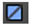
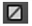
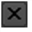
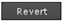

插入节点时，其属性面板将自动出现在 属性 带有定义节点输出的选项的窗格。您也可以稍后通过执行以下任何操作打开 “属性” 面板:
• 双击节点图中的节点。
• Ctrl / Cmd 单击节点图中的节点。
• 在节点图中选择节点并按 返回 .
提示: 要在浮动窗口中打开属性面板, Ctrl / Cmd Alt 单击节点。
插入节点时，其属性面板将自动出现在 属性 带有定义节点输出的选项的窗格。您也可以稍后通过执行以下任何操作打开 “属性” 面板:
• 双击节点图中的节点。
• Ctrl / Cmd 单击节点图中的节点。
• 在节点图中选择节点并按 返回 .
提示: 要在浮动窗口中打开属性面板, Ctrl / Cmd Alt 单击节点。
你可以限制打开属性面板，可以打开的 属性 窗格。为此，请在 “属性” 窗格上的字段中输入 “属性” 面板的最大数量。
要锁定 属性 窗格，并将所有新的属性面板显示在浮动窗口中，单击 属性 窗格。
要清空 属性 窗格并关闭其中的所有属性面板，单击 “删除所有面板” 按钮。
提示: 也可以关闭中的所有属性面板 属性 窗格由 Alt 点击关闭 ( X ) 其中一个面板的按钮。
以下是每个属性面板的标准控件:
|
控制 |
函数 |
|
|
隐藏或显示节点的选项卡式页面。 |
|
|
在节点图中使节点居中。 |
|
|
在节点图中使节点的一个输入居中。从出现的下拉菜单中选择输入。 |
|
|
您可以在此处保存、加载和管理节点预设。 |
|
名称字段 (例如, Blur1 ) |
您可以在此处输入节点的新名称。 |
|
 (左) |
更改节点的颜色。您可以将此按钮拖放到另一个颜色按钮的顶部，以复制颜色。恢复到在中定义的默认颜色 偏好 ,右击按钮并选择 将颜色设置为默认 . 一个 X 按钮上表示颜色未设置，并使用首选项中定义的颜色。 |
|
 (右) |
更改查看器中用于节点控件的颜色。您可以将此按钮拖放到另一个颜色按钮的顶部，以复制颜色。要恢复到首选项中定义的默认颜色，请右键单击按钮并选择 将颜色设置为默认 . 一个 X 按钮上表示颜色未设置，并使用首选项中定义的颜色。 |
|
|
撤销对节点所做的最后一次更改。 |
|
|
重做最后一个未完成的更改。 |
|
|
恢复打开 “属性” 面板后所做的任何更改。 |
|
|
显示与节点及其控件相关的在线帮助。 注意: 如果联机帮助不可用，工具提示将显示有关节点的信息。 |
|
|
浮动属性面板。再次单击此按钮将属性面板停靠回 属性 窗格 (如果窗格是打开的)。 |
|
 |
关闭 “属性” 面板。 Alt 单击此选项可关闭中的所有属性面板 属性 窗格。 Ctrl / Cmd 单击以关闭所有属性面板，但单击的面板除外。 |
浮动控制面板还包括以下按钮:
|
控制 |
函数 |
|
 |
恢复打开 “属性” 面板后所做的任何更改。 |
|
|
恢复打开属性面板后所做的任何更改并关闭属性面板。创建节点后立即单击此按钮也会从节点图中删除该节点。 |
|
|
关闭 “属性” 面板。 |
许多属性面板还包含几个选项卡式页面。
| 读取节点的属性面板和节点选项卡。 |
在 节点 选项卡，通常可以调整以下控件:
|
Control |
Function |
|
标签 |
允许您向节点添加注释。注释显示在节点的表面上。 如果您愿意，您可以在标签字段中使用 HTML。例如，要让您的评论以粗体显示，您可以输入 我的评论 </b> 。添加名为的图标
MyIcon.png
到节点，您可以使用
<Img src = "MyIcon.png"/>
。将图标保存在插件路径目录中
请注意，HTML 已经被更改为稍微不标准的形式，其中换行符很重要。如果数据中有换行符，标签中将显示新行。 |
|
字体 |
用于更改节点上显示的任何文本的字体。 |
|
|
将节点上显示的任何文本加粗。 |
|
|
强调节点上显示的任何文本。 |
|
|
用于更改节点上显示的任何文本的字体大小。 |
|
|
用于更改节点上显示的任何文本的颜色。 |
|
隐藏输入 |
选中此选项可隐藏节点的传入管道。此控件不会出现在所有节点上。 |
|
缓存 |
检查这一点，将数据从节点上游保存在内存中，以便快速读取。选中此选项后，节点图中的节点下将显示一条黄线。 |
|
禁用 |
选中此选项可禁用节点。取消选中以重新启用。(也可以通过在节点图中选择节点并按 D 键来禁用或重新启用节点。) |
|
涂料表 |
选中此选项可强制节点始终显示在摄影表中。你也可以按 Alt D 打开和关闭这个。 默认情况下，摄影表显示所有打开控制面板的读取节点，以及用于创建关键帧的任何节点。 |
|
书签 |
选中此选项可在书签列表中显示节点。这允许您快速导航到节点。有关更多信息，请参见 在节点图内导航 . |
|
邮票 |
选中此选项可在其表面上显示节点输出的缩略图渲染。你也可以按 Alt P 在物品箱上切换邮票。 |
|
静态框架 |
如果希望邮票显示固定框架 (而不是更新以匹配当前框架)，请输入要在此显示的框架。要做到这一点，你还需要按 转变 S 要打开 偏好 对话框，转到 节点图 标签，并确保 邮票模式 设置为 静态框架 . 请注意，如果您使用的帧号超出了节点的帧范围，它将被夹到该范围中的第一个或最后一个帧。 |
|
Lifetime 范围 |
输入开始帧和结束帧，以控制该节点处于活动状态时的帧范围。您可以快速打开和关闭生命周期 使用寿命 . |
要显示节点的参数，请双击该节点。它的属性面板出现。
下图显示了可用于编辑参数的控件。请注意，每个控件的存在根据参数的功能而变化。

您可以将值直接键入字段，按箭头键增加和减少值，或者使用鼠标中键激活虚拟滑块。
要输入字段值:
| 1。 | 双击该字段以选择整个值。 |
| 2. | 键入要替换所选内容的值。 |
提示: 还可以在字段中输入表达式 (生成值的编程说明)。您总是通过键入来启动表达式 = 。请参阅 表情 有关如何设置表达式格式的信息。
提示: 核武器 还允许您将公式输入到字段中，以便于快速计算。例如，如果您想将值 378 减半，您可以简单地键入 378/2 进入一个领域，并按 输入 得到 189。
您可以将字段值递增或递减数百、十分之一、百分之一等。变化的幅度取决于光标的初始位置。例如，如果你想增加的初始值 20.51 通过一个，你会插入你的光标之前 0 .
增加或减少字段值:
| 1。 | 单击以在要增加或减少的数字之前插入光标。 |
| 2. | 按下 向上箭头 增加一个单位，或 向下箭头 减少一个单位。 |
提示: 您还可以使用鼠标滚轮 (如果可用) 或按 Alt 拖动值时。后一种方法对平板电脑用户特别有用。
要使用虚拟滑块，可以将光标悬停在数字控件上，单击鼠标中键，然后拖动该字段以调整关联的控件。

提示: 保持 转变 增加滑块灵敏度。
|
|